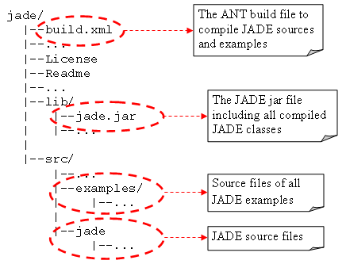
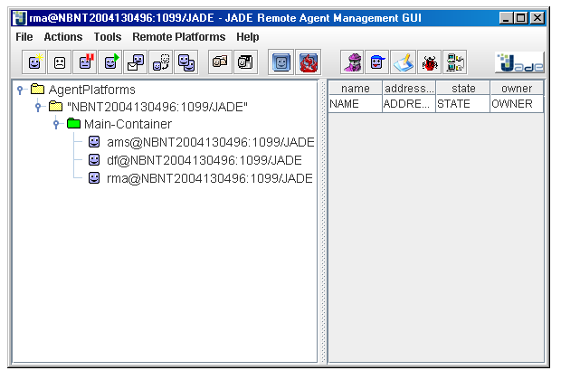
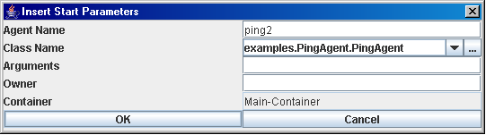
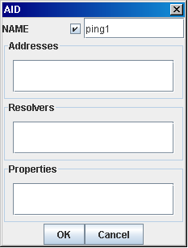
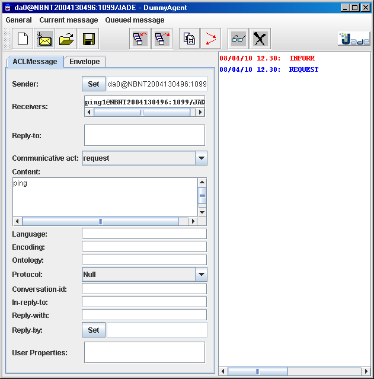

Figure 3. The DummyAgent GUI
This tutorial describes how to launch the JADE runtime and provides a brief description of the
main features of the JADE administration GUI.
As described in previous section launching the JADE runtime means
creating a Container. Such container can then contain agents that can be started directly at container startup
time or later on e.g. through the JADE Management GUI. Moreover, being the first container in the platform,
such container MUST be the platform Main Container
This section assumes you have downloaded the JADE binary distribution (JADE-bin-4.0.zip), the
JADE source distribution (JADE-src-4.0.zip) and the
JADE examples distribution (JADE-examples-4.0.zip). Once you have unzipped them somewhere on your disk
you should end up with a directory structure similar to that below:

Since we specified the -gui option, the JADE Management Console depicted in Figure 2 should also appear.

Figure 1. The JADE Management Console
In order to shut the platform down, in the Management Gui, choose File --> Shut down Agent Platform and then select Yes when prompted for confirmation.
In this section we will start some agents and we will make them communicate. In particular we will use the DummyAgent, a ready-made agent (included among the JADE tools) that can be used to send and receive custom messages, and the PingAgent, an example included in the JADE examples distribution. The latter (as all JADE examples) must be compiled first.
The sources of the PingAgent are included in the src\examples\PingAgent directory.
To compile them (as for any Java source files) it is possible to type
javac -classpath lib\jade.jar -d classes src\examples\PingAgent\*.java
If you have ANT installed, however you can simply type
ant examples
This will compile all JADE examples at once and put the generated .class files into the classes
directory.
Agents can be started in two ways: directly from the command line (at container startup time) by means of the -agents option, or later on by means of the Management GUI
In both cases, unless we use more sophisticated features such as Agent Mobility or Jar-packaged-agents which are out of the scope of this tutorial (see the JADE Administrator's Guide for details), the agent classes must be included in the classpath of the Container where we want to start them.
Starting agents using the command line
In the shell type the command line below
java -cp lib\jade.jar;classes jade.Boot -gui -agents ping1:examples.PingAgent.PingAgent
Note that the classpath includes JADE classes (lib\jade.jar) and the previously compiled classes
of the examples (classes). Note also that the value of the -agents option takes the form
<agent-local-name>:<fully-qualified-agent-class>
Using JADE terminology, this is called an "Agent Specifier". More than one agent can be started by just
typing several agent specifiers separated by a semicolon (';') as in the example below
java -cp lib\jade.jar;classes jade.Boot -gui -agents ping1:examples.PingAgent.PingAgent;ping2:examples.PingAgent.PingAgent
The above example also shows that you can start several agents sharing the same class. Each one will have
its name and will operate independently from the others.
If you typed everything correctly you should see the RMA Management GUI appearing again. Expanding the tree,
besides the usual ams, df and rma, you should also see an agent called
ping1. This is our PingAgent.
The PingAgent is a very simple agent waiting for messages. If a REQUEST message with content
ping is received, an INFORM message with content pong is sent back. If any other
message is received, a NOT_UNDERSTOOD message is sent back. Refer to the JADE Programming Tutorial
for an explanation on message format (defined by the ACL language specified by FIPA)
and for details about how to program agents so that they are able to send and receive messages.
Let's now start a second PingAgent using the Management Console. Right-click on the Main Container
(currently we only have this container in our platform and as a consequence we can only start agents there).
In the popup menu select the Start New Agent item. A dialog box similar to that depicted in
Figure 2 appears. Type the name (ping2) and the fully qualified class name
(examples.PingAgent.PingAgent) then press OK. The ping2 agent should appear in the
RMA Management Console under the Main Container.

Figure 2. The Start New Agent dialog box
At this point we have two PingAgents, ping1 and ping2, waiting for messages. Now we
will use the Dummy Agent, a ready-made "tool" agent that allows sending/receiving custom messages, to stimulate
them. Besides the Dummy Agent, JADE provides other useful tool agents. The Sniffer Agent that
allows inspecting conversations between agents, the Introspector or Debugger Agent that allows inspecting
the internals of an agent (e.g. the tasks it is currently executing) and the Log Manager Agent that
allows changing the log levels of classes at runtime. Tool agents can be started as we did for the Ping Agent.
However they have a shortcut button in the RMA GUI. So let's click on the Start DummyAgent button in the
upper right toolbar of the Management Console. A DummyAgent called da0 should be created and its GUI
should appear as depicted in Figure 3.
Figure 3. The DummyAgent GUI
The form in the left part of the DummyAgent GUI shows the slots of an ACL Message. All slots, but the
Communicative Act are optional.
So select the REQUEST communicative act, type ping in the Content slot and
finally select a receiver for the message: e.g. ping1. In order to do that, right-click in the
Receivers text area and select the Add menu item. A dialog box similar to that depicted in
Figure 4 should appear.

As you can see from this dialog box an agent is fully identified by an AID (Agent Identifier). The AID contains a unique name, that, as already mentioned, has the form <local-name>@<platform-name>, plus some (possibly none) transport addresses. Actually there are also other information. These however are there just for compliance with the FIPA specification: you can forget about them. Addresses are used only when communication occurs between agents living in different platforms as will be described in Tutorial 4. Whenever the communication occurs between agents belonging to the same platform only agent names are used. So fill in the form in the manner shown and click the OK button. Checking the box beside the NAME text field means that we are specifying the agent local-name only. JADE will append the @<platform-name> automatically.
Finally click the button with the message icon in the DummyAgent GUI.
In the right pane of the DummyAgent GUI two lines appear, one red, the other blue. The most recent is the
topmost. Blue refers to sent messages, red to received messages. You should see something similar to that
depicted in Figure 5.

Figure 5. Sent and received messages in the DummyAgent GUI
You can examine the received INFORM message (sent by the ping1 agent) by selecting it and then clicking the button with the "glasses" icon. As mentioned before the ping1 agent replied with "pong".